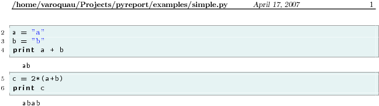
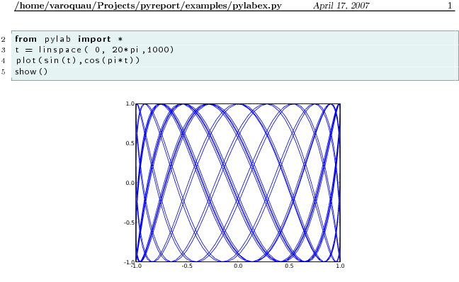
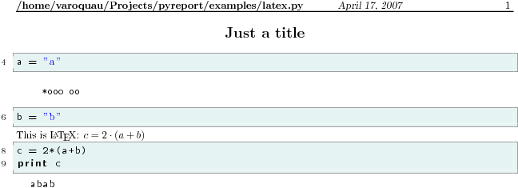

pyreport is a program that runs a python script and captures its output, compiling it to a pretty report in a pdf or an html file. It can display the output embedded in the code that produced it and can process special comments (literate comments) according to markup languages ( rst or LaTeX ) to compile a very readable document.
This allows for extensive literate progamming [1] in python, for generating reports out of calculations written in python, and for making nice tutorials.
License pyreport is free software released under a BSD-like license. You can chek out the latest code, submit bugs, ask questions… on the github project page.
Warning
Pyreport is unmaintained
Due to lack of time, pyreport is unmaintained and looking for a contributor. Please do not contact me to ask questions, unless it is to take over development.
Contents
Requirements
pyreport is Python, and needs the Python interpreter to run. It should work on any operating system where Python and the other requirements are available.
External programs:
Under windows make sure they are in the path, elsewhere pyreport cannot find them. All these programs are available with the MikTeX LaTeX distribution.
- pyreport does not need any external programs to generate html files.
- LaTeX : currently pyreport calls LaTeX to generate pdf files. Hopefully one day this will be optional and pyreport will use reportlabs to output pdf files.
- epstopdf or ps2pdf if you want to use pylab to insert graphs in your documents. Once matplotlib has a pdf backend this will not be needed.
Python packages:
- docutils only
Installing
The easiest way to install pyreport is using pip:
pip install pyreport
It is recommended to install to your user drive:
pip install --user pyreport
Examples and use cases
Initial goals
I use python to write small scripts that can do, for instance, numerical calculations, or simple operations [2] and I want to have nice print-outs of these scripts to study off-screen or to hand out to colleagues. Having the code with its relevant output is great for code reviewing. This also allows something similar to mathematica’s notebook in python without having to use a special IDE.
First I want to be able to have a print-out of these calculations where I can see the code ran, and the results produced:

{kind=link}
Second I would like all the plots produced by matplotlib to be captured and displayed too.

{kind=link}
Last I would be able to comment these reports, give them titles, sections, … This can be done via “literate programming”: comment lines begin with a special sets of characters are interpreted as rst or LaTeX. I also want these files to still be standard python files, and to be able to run them with the python interpreter.
#! Just a title #!--------------- a = "a" #! *ooo oo b = "b" #$ This is \LaTeX : $c = 2\cdot(a+b)$ c = 2*(a+b) print c
{kind=link}
Other possible uses
- Hidding the source code allows to generate nice reports from calculation scripts without worrying about writing document generating code in the script itself. The use of the literal comments and print statements allow your report to be well structured and self-explaining. The major advantage of having the text of the report in the source of the calulation is that the report always discribes the calculation that was actually ran, and not a previous one, with incorrect constants, for instance.
- With a moin-moin syntax and a pdf output this can be a very useful tool for writing tutorials and putting them on line, with a pdf version.
Examples
Here are two examples showing what you can do with pyreport :
A calculation of the bifurcation diagram of the logistic mapping
The code , the pdf generated , and the html file generated
An exploration of the Julia sets, this example uses a LaTeX equation (LaTeX embedding does not work with html output, so far):
The code , the pdf generated , and the html file generated
Limitations
The “sys” module is imported in your code, whether you want it or not. As a general rule, beware of the namespace when running your scripts with pyreport, pyreport injects a few variables in your namespace.
from __future__ import foobar in a script does not work. This a a big caveat ! This is simply not possible in python, as the from __future__ imports have to be the first statement of a script.
As a consequence I have made the decision to always import division, so that 2/3 = 0.6666.
Some stange bugs can occur depending on the backend you use for matplotlib. WXAgg has played me a few tricks.
Command line switches
This is not as useful as a well written documentation, but it is better than nothing:
usage: pyreport [options] pythonfile
Processes a python script and pretty prints the results using LateX. If
the script uses "show()" commands (from pylab) they are caught by
pyreport and the resulting graphs are inserted in the output pdf.
Comments lines starting with "#!" are interprated as rst lines
and pretty printed accordingly in the pdf.
By Gael Varoquaux
options:
--version show program's version number and exit
-h, --help show this help message and exit
-o FILE, --outfile=FILE
write report to FILE
-x, --noexecute do not run the code, just extract the literate
comments
-n, --nocode do not display the source code
-d, --double compile to two columns per page (only for pdf or tex
output)
-t TYPE, --type=TYPE output to TYPE, TYPE can be ps, dvi, trac, eps, tex,
html, pdf, rst, moin
-f TYPE, --figuretype=TYPE
output figure type TYPE (TYPE can be of pdf, jpg,
eps, png, ps depending on report output type)
-c CHAR, --commentchar=CHAR
literate comments start with "#CHAR"
-l, --latexliterals allow LaTeX literal comment lines starting with "#$"
-e, --latexescapes allow LaTeX math mode escape in code wih dollar signs
-p, --nopyreport disallow the use of #pyreport lines in the processed
file to specify options
-q, --quiet don't print status messages to stderr
-v, --verbose print all the message, including tex messages
-s, --silent Suppress the display of warning and errors in the
report
--noecho Turns off the echoing of the output of the script on
the standard out
-a ARGS, --arguments=ARGS
pass the arguments "ARGS" to the script
| [1] | literate programming is a programming style that embeds the documentation of a program in its source code. The documentation is generated in the same time that the program is built. I am using the term in a very loose way, as pyreport is capable of literate programming, but also of much more, as it embeds the documentation, but also weaves the output of the script in the documentation. |
| [2] | scipy provides a very powerful math package to python, and matplotlib is a great plotting interface. |